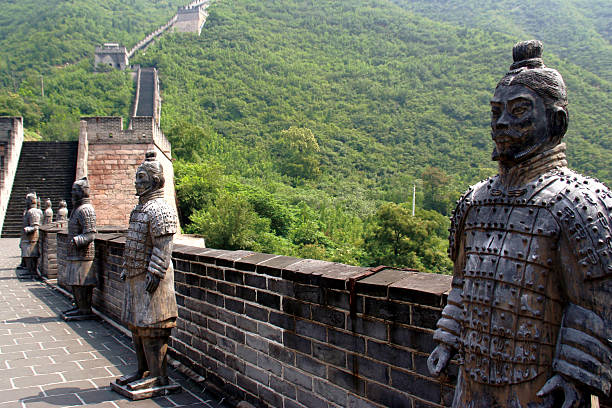
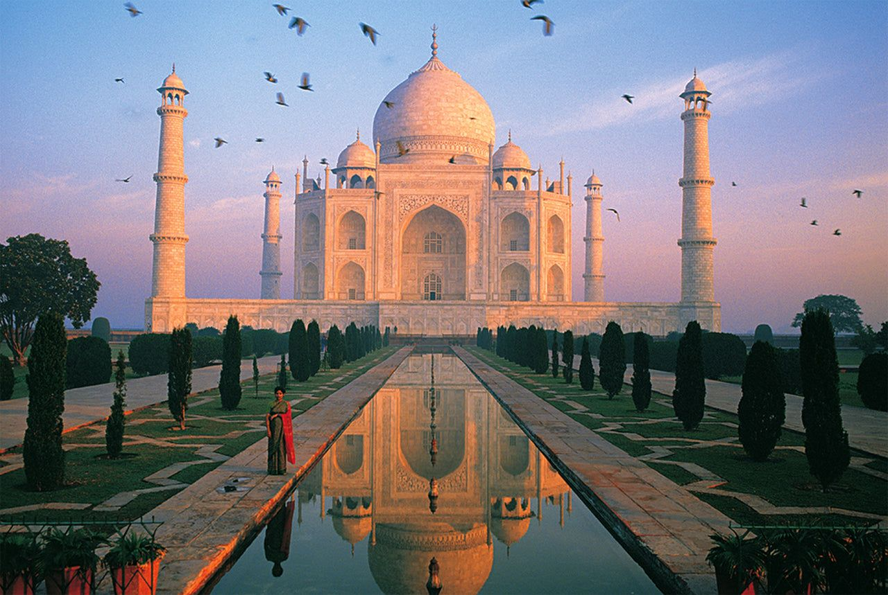
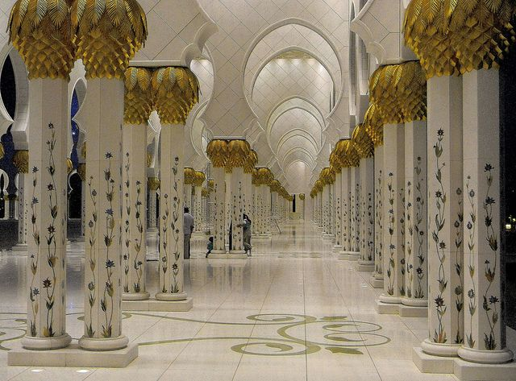
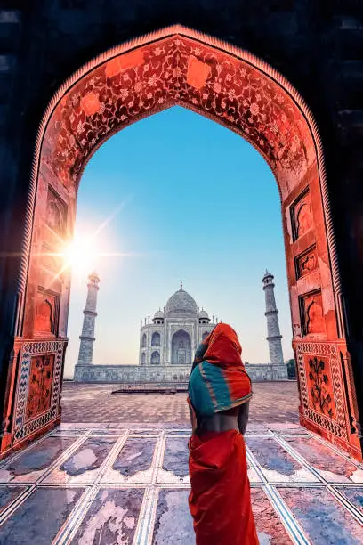
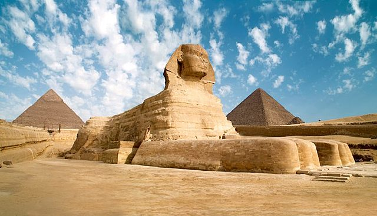
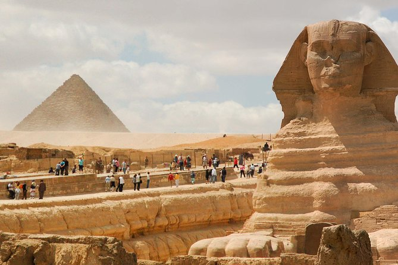
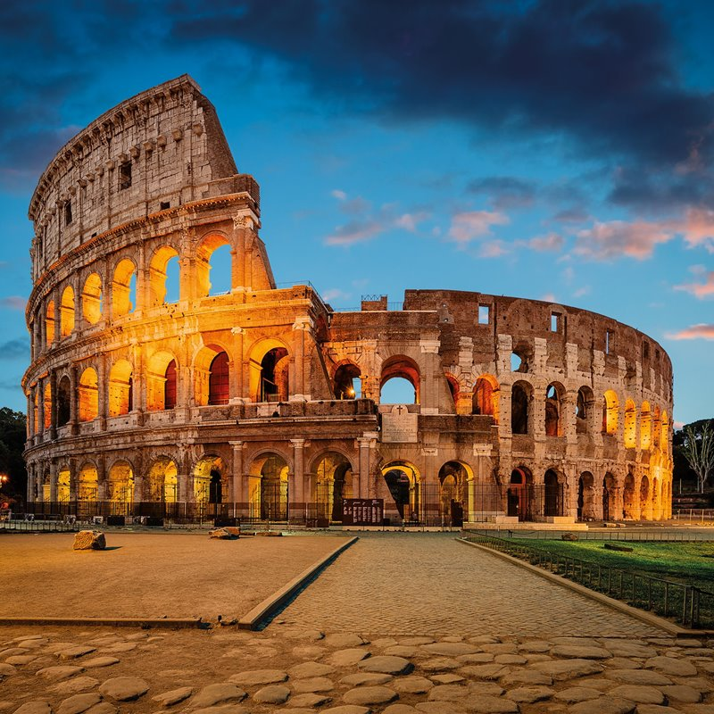
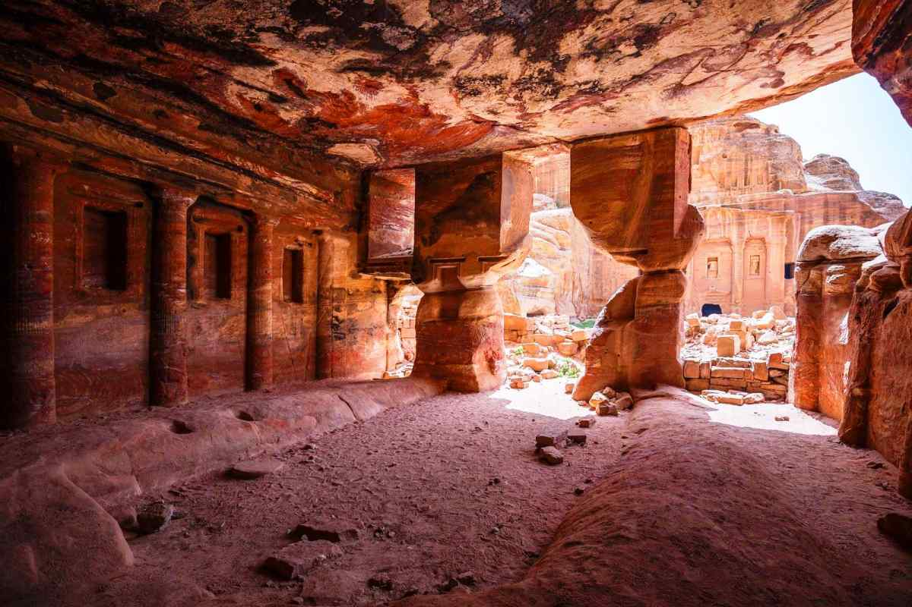

5 Maravillas del Mundo
1.-La Gran Muralla China
Con casi 9000 kilómetros la Gran Muralla de China es uno de los lugares que
ver en el mundo más impresionantes.
Esta se empezó a construir en el s.V a.C para proteger la frontera norte del país
y a lo largo de varios siglos se ha ido reconstruyendo.
Aunque se pueden visitar muchos sectores nosotros te recomendamos hacer el
Trek King entre Jinshanling y Simatai,que pese a ser especialmente duro y complicado,
al tratarse de dos sectores prácticamente sin restaurar, te regalan una experiencia única.


2.-Tal Mahalan India
Todos hemos escuchado en alguna ocasión: «India o la amas o la odias» aunque esta afirmación no es aplicable al Taj Mahal, del que dicen es el monumento más bello del mundo construido por amor.
Nosotros no sabemos si habrá otro más bello lo que sí podemos decirte es que es una de las maravillas del mundo más impresionantes y bellas. Siempre que puedas te recomendamos no quedarte con la imagen
más típica e ir después de la visita a la orilla del río Yamuda desde donde la perspectiva es impresionante.



3.-Pirámides de Giza China
Ubicadas en la necrópolis de Guiza, a 40 kilómetros de El Cairo y en uno de los países más fascinantes del mundo, las Pirámides de Giza (pirámide de Micerinos, pirámide de Kefrén y pirámide de Keops) se alzan como una de las maravillas del mundo antiguo. Vayas por libre o en viaje organizado tendrás la posibilidad de entrar en una de las pirámides. Pese a que te digan que dentro no hay nada o leas que no merece la pena hacerlo, te recomendamos que no hacer caso y vivir la experiencia.


4.-Coliseo Italia
Con una arquitectura única y construido en el s.I por la dinastía de emperadores Flavia, esta es otra de las maravillas del mundo más destacadas y más impresionantes. Con capacidad para más de 65000 espectadores en este lugar tuvieron lugar peleas de gladiadores y recreaciones de batallas además de ejecuciones. Siempre que puedas haz la visita a primera hora de la mañana ya que es el momento del día en el que hay menos gente. Además, si quieres vivir un momento único, te recomendamos ir al Coliseo al amanecer.


5.- Petra Jordania
Construida en el desierto hace más de 2000 años, la antigua capital de los nabateos es uno de los lugares más increíbles que puedas imaginar además de otra de las grandes maravillas del mundo. Rodeada de montañas para poder acceder debes recorrer un impresionante desfiladero, conocido como Siq, que propició que la ciudad perdida no fuese redescubierta hasta el s.XIX. Siempre que puedas te recomendamos estar un par de días en Petra, tiempo que creemos es imprescindible para conocer el lugar. Además, no te pierdas el espectáculo nocturno aunque este es recomendable verlo antes de hacer la visita diurna para sorprenderte al máximo.

